건축산업기사 (2018-04-28 기출문제)
1과목: 건축계획
1. 다음 중 단독주택의 현관 위치 결정에 가장 주된 영향을 끼치는 것은?
- 용적률
- 건폐율
- 주택의 규모
- 도로의 위치
(정답률: 89%)

2. 다음 설명에 알맞은 백화점 건축의 에스컬레이터 배치 유형은?
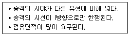
- 직렬식
- 교차식
- 병렬 연속식
- 병렬 단속식
(정답률: 81%)
3. 다음 중 단독주택 설계 시 거실의 크기를 결정하는 요소와 가장 거리가 먼 것은?
- 가족 구성
- 생활 방식
- 주택의 규모
- 마감재료의 종류
(정답률: 84%)
4. 메조네트(maisonette)형 공동주택에 관한 설명으로 옳지 않은 것은?
- 통로 면적이 감소된다.
- 복도가 없는 층이 생긴다.
- 엘리베이터 정지층수가 적다.
- 소규모 주택에 주로 적용된다.
(정답률: 74%)
5. 주택단지 내 도로의 유형 중 쿨데삭(cul-de-sac) 형에 관한 설명으로 옳지 않은 것은?
- 통과교통을 방지할 수 있다.
- 우회도로가 없어 방재·방범상 불리하다.
- 주거환경의 쾌적성 및 안전성 확보가 용이하다.
- 대규모 주택단지에 주로 사용되며, 도로의 최대 길이는 600m 이하로 계획한다.
(정답률: 64%)
6. 다음 중 상점건축의 매장 내 진열장(show case) 배치 계획 시 가장 우선적으로 고려하여 할 사항은?
- 조명관계
- 진열장의 수
- 고객의 동선
- 실내 마감재료
(정답률: 82%)
7. 상점의 판매 형식 중 대면판매에 관한 설명으로 옳은 것은?
- 측면판매에 비하여 진열면적이 커진다.
- 측면판매에 비하여 포장하기가 편리하다.
- 측면판매에 비하여 충동적 구매와 선택이 용이하다.
- 측면판매에 비하여 판매원의 정위치를 정하기 어렵다
(정답률: 71%)
8. 사무소 건축에서 유효율이 의미하는 것은?
- 연면적에 대한 건축면적의 비율
- 연면적에 대한 대실면적의 비율
- 건축면적에 대한 대실면적의 비율
- 기준층 면적에 대한 대실면적의 비율
(정답률: 67%)
9. 한식주택의 특정에 관한 설명으로 옳지 않은 것은?
- 한식주택의 실은 혼용도이다.
- 생활습관적으로 보면 좌식이다.
- 각 실이 마루로 연결된 조합평면이다.
- 가구의 종류와 형에 따라 실의 크기와 폭비가 결정된다.
(정답률: 78%)
10. 1주간의 평균 수업시간이 35시간인 어느 학교에서 음악교실이 사용되는 시간은 25시간이다. 그 중 15시간은 음악시간으로 10시간은 영어 수업을 위해 사용된다면, 음악교실의 이용률과 순수율은 얼마인가?
- 이용률 : 60%, 순수율 : 71%
- 이용률 : 40%, 순수율 : 29%
- 이용률 : 29%, 순수율 : 40%
- 이용률 : 71%, 순수율 : 60%
(정답률: 74%)
11. 다음 설명에 알맞은 사무소 건축의 코어 유형은?
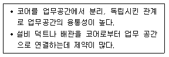
- 외코어형
- 중앙코어형
- 양단코어형
- 분산코어형
(정답률: 68%)
12. 초등학교의 강당 및 실내체육관 계획에 관한 설명으로 옳지 않은 것은?
- 체육관은 농구코트를 둘 수 있는 크기가 필요하다.
- 강당과 체육관을 겸용할 경우에는 체육관을 주체로 계획한다.
- 강당은 반드시 전교생 전원을 수용할 수 있도록 크기를 결정한다.
- 강당과 체육관을 겸용하게 되면 시설비나 부지면 적을 절약할 수 있다.
(정답률: 77%)
13. 공장의 창고건축에 관한 설명으로 옳지 않은 것은?
- 다층창고에서 화물의 출입은 기계설비를 이용한다.
- 단층창고는 지가가 높고, 협소한 부지의 경우 주로 이용된다.
- 단층창고의 경우 구조, 재료가 허용하는 한 스팬을 넓게 하는 것이 좋다.
- 단층창고의 출입문은 보통 크게 내는 것이 좋으며, 통상적으로 기둥 사이의 전체길이를 문으로 한다.
(정답률: 71%)
14. 다음 중 단독주택의 부엌 계획 시 초기에 가장 중점적으로 고려해야 할 사항은?
- 위생적인 급·배수 방법
- 환기를 위한 창호의 크기 및 위치
- 실내 분위기를 위한 마감 재료와 색채
- 조리 순서에 따른 작업대의 배치 및 배열
(정답률: 77%)
15. 사무소의 실단위 계획에서 오피스 랜드스케이핑(Office Landscaping)에 관한 설명으로 옳지 않은 것은?
- 커뮤니케이션의 융통성이 있다.
- 독립성과 쾌적감의 이점이 있다.
- 소음 발생에 대한 대책이 요구된다.
- 공간의 이용도를 높이고 공사비도 줄일 수 있다.
(정답률: 80%)
16. 다음 중 근린생활권의 단위로서 규모가 가장 작은 것은?
- 인보구
- 근린주구
- 근린지구
- 근린분구
(정답률: 83%)
17. 사무소 건축의 평면형태 중 2중지역 배치에 관한 설명으로 옳지 않은 것은?
- 동서로 노출되도록 방향성을 정한다.
- 중규모 크기의 사무소 건축에 적당하다.
- 주계단과 부계단에서 각 실로 들어갈 수 있다.
- 자연채광이 잘 되고 경제성보다 건강, 분위기 등의 필요가 더 요구될 때 적당하다.
(정답률: 66%)
18. 모듈계획(MC: Modular Coordination)에 관한 설명으로 옳지 않은 것은?
- 건축재료의 취급 및 수송이 용이해진다.
- 건물 외관의 자유로운 구성이 용이하다.
- 현장 작업이 단순해지고 공기를 단축시킬 수 있다.
- 건축재료의 대량 생산이 용이하여 생산 비용을 낮출 수 있다.
(정답률: 82%)
19. 연속작업식 레이아웃(layout)이라고도 하며, 대량생산에 유리하고 생산성이 높은 공장건축의 레이아웃 형식은?
- 고정식 레이아웃
- 혼성식 레이아웃
- 제품중심의 레이아웃
- 공정중심의 레이아웃
(정답률: 64%)
20. 연립주택의 종류 중 타운 하우스에 관한 설명으로 옳지 않은 것은?
- 배치상의 다양성을 줄 수 있다.
- 각 주호마다 자동차의 주차가 용이하다.
- 프라이버시 확보는 조경을 통하여서도 가능하다.
- 토지 이용 및 건설비, 유지관리비의 효율성은 낮다.
(정답률: 70%)
2과목: 건축시공
21. 높이 3m, 길이 150m인 벽을 표준형 벽돌로 1.0B쌓기할 때 소요매수로 옳은 것은? (단, 할증률은 5%로 적용)
- 67⑤3매
- 675⑤매
- 70403매
- 74012매
(정답률: 56%)
22. 워커빌리티에 영향을 주는 인자가 아닌 것은?
- 단위 수량
- 시멘트의 강도
- 단위 시멘트량
- 공기량
(정답률: 60%)
23. 콘크리트의 고강도화를 위한 방안과 거리가 먼 것은?
- 물 - 시멘트 비를 크게 한다.
- 고성능 감수제를 사용한다.
- 강도발현이 큰 시멘트를 사용한다.
- 폴리머(Polymer)를 함침한다.
(정답률: 70%)
24. 네트워크 공정표에 관한 설명으로 옳지 않은 것은?
- 개개의 관련 작업이 도시되어 있어 내용을 파악하기 쉽다.
- 공정이 원활하게 추진되며, 여유시간 관리가 편리하다.
- 공사의 진척상황이 누구에게나 쉽게 알려지게 된다.
- 다른 공정표에 비해 작성시간이 짧으며, 작성 및 검사에 특별한 기능이 요구되지 않는다.
(정답률: 68%)
25. 킨즈 시멘트에 관한 설명으로 옳지 않은 것은?
- 석고 플라스터 중 경질에 속한다.
- 벽바름재 뿐만 아니라 바닥바름에 쓰이기도 한다.
- 약산성의 성질이 있기 때문에 접촉되면 철재를 부식시킬 염려가 있다.
- 점도가 없어 바르기가 매우 어렵고 표면의 경도가 작다.
(정답률: 50%)
26. 바닥에 콘크리트를 타설하기 위한 거푸집으로서 거푸집판, 장선, 멍에, 서포트 등을 일체로 제작하여 부재화한 거푸집을 무엇이라 하는가?
- 클라이밍 폼
- 유로 폼
- 플라잉 폼
- 갱 폼
(정답률: 56%)
27. 세로 규준틀이 주로 사용되는 공사는?
- 목공사
- 벽돌공사
- 철근콘크리트공사
- 철골공사
(정답률: 69%)
28. 무근콘크리트의 동결을 방지하기 위한 목적으로 사용되는 것은?
- 제2산화철
- 산화크롬
- 이산화망간
- 염화칼슘
(정답률: 79%)
29. 도장공사 시 건조제를 많이 넣었을 때 나타나는 현상으로 옳은 것은?
- 도막에 균열이 생긴다.
- 광택이 생긴다.
- 내구력이 증가한다.
- 접착력이 증가한다.
(정답률: 82%)
30. 목조반자의 구조에 서 반자틀의 구조가 아래에서부터 차례로 옳게 나열된 것은?
- 반자틀 - 반자틀 받이 - 달대 - 달대받이
- 달대 - 달대받이 - 반자틀 - 반자틀받이
- 반자틀 - 달대 - 반자틀받이 - 달대받이
- 반자틀받이 - 반자틀 - 달대받이 - 달대
(정답률: 59%)
31. 목조계단에서 디딤판이나 챌판은 옆판(측판)에 어떤 맞춤으로 시공하는 것이 구조적으로 가장 우수한가?
- 통 맞춤
- 턱솔 맞춤
- 반턱 맞춤
- 장부 맞춤
(정답률: 49%)
32. 지반조사를 구성하는 항목에 관한 설명으로 옳은 것은?
- 지하탐사법에는 짚어보기, 물리적 탐사법 등이 있다.
- 사운딩시험에는 팩 드레인공법과 치환공법 등이 있다.
- 샘플링에는 흙의 물리적 시험과 역학적 시험이 있다.
- 토질시험에는 평판재하시험과 시험말뚝박기가 있다.
(정답률: 52%)
33. 흙막이 공법의 종류에 해당되지 않는 것은?
- 지하연속벽 공법
- H-말뚝 토류판 공법
- 시트파일 공법
- 생석회 말뚝 공법
(정답률: 53%)
34. 콘크리트 부어 넣기에서 진동기를 사용하는 가장 큰 목적은?
- 재료분리 방지
- 작업능률 촉진
- 경화작용 촉진
- 콘크리트의 밀실화 유지
(정답률: 67%)
35. 로이 유리(Low Emissivity Glass)에 관한 설명으로 옳지 않은 것은?
- 판유리를 사용하여 한쪽 면에 얇은 은막을 코팅한 유리이다.
- 가시광선을 76% 넘게 투과시켜 자연채광을 극대화하여 밝은 실내분위기를 유지할 수 있다.
- 파괴 시 파편이 없는 등 안전성이 뛰어나 고층건물의 창, 테두리 없는 유리문에 많이 쓰인다.
- 겨울철에 건물 내에 발생하는 장파장의 열선을 실내로 재반사시켜 실내보온성이 뛰어나다.
(정답률: 68%)
36. 프리캐스트 콘크리트의 생산과 관련된 설명으로 옳지 않은 것은?
- 철근 교점의 중요한 곳은 풀림 철선 혹은 적절한 클립 등을 사용하여 결속하거나 점용접하여 조립하여야 한다.
- 생산에 사용되는 프리스트레스 긴장재는 스터럽이나 온도철근 등 다른 철근과 용접가능하다.
- 거푸집은 콘크리트를 타설할 때 진동 및 가열 양생 등에 의해 변형이 발생하지 않는 견고한 구조로서 형상 및 치수가 정확하며 조립 및 탈형이 용이한 것이어야 한다.
- 콘크리트의 다짐은 콘크리트가 균일하고 밀실하게 거푸집 내에 채워지도록 하며, 진동기를 사용하는 경우 미리 묻어둔 부품 등이 손상하지 않도록 주의하여야 한다.
(정답률: 63%)
37. 다음 ( ) 안에 가장 적합한 용어는?
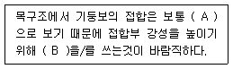
- A : 강접합, B : 가새
- A : 핀접합, B : 가새
- A : 강접합, B : 샛기둥
- A : 핀접합, B : 샛기둥
(정답률: 66%)
38. 지하층 굴착 공사 시 사용되는 계측 장비의 계측내용을 연결한 것 중 옳지 않은 것은?
- 간극 수압 - Piezo meter
- 인접건물의 균열 - Crack gauge
- 지반의 침하 - Vibrometer
- 흙막이의 변형 - Strain gauge
(정답률: 57%)
39. 시방서에 관한 설명으로 옳지 않은 것은?
- 시방서는 계약서류에 포함된다.
- 시방서 작성순서는 공사진행의 순서와 일치하도록 하는 것이 좋다.
- 시방서에는 공사비 지불조건이 필히 기재되어야 한다.
- 시방서에는 시공방법 등을 기재한다.
(정답률: 74%)
40. 철골조의 부재에 관한 설명으로 옳지 않은 것은?
- 스티프너(stiffener)는 웨브(web)의 보강을 위해서 사용한다.
- 플랜지플레이트(flange plate)는 조립보(plate girder)의 플랜지 보강재이다.
- 거셋플레이트(gusset plate)는 기둥 밑에 붙여서 기둥을 기초에 고정시키는 역할을 한다.
- 트러스 구조에서 상하에 배치된 부재를 현재라한다.
(정답률: 52%)
3과목: 건축구조
41. 다음 구조물의 개략적인 휨모멘트도로 옳은 것은?
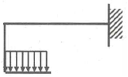
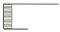
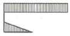
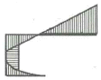
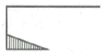
(정답률: 72%)
42. 다음 그림과 같이 보의 휨모멘트도가 나타날 수 있는 지점상태는?
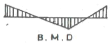
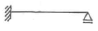
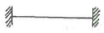
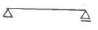
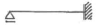
(정답률: 60%)
43. 내진설계 시 휨모멘트와 축력을 받는 특수모멘트 골조 부재의 축방향 철근의 최대 철근비는?
- 0.02
- 0.04
- 0.06
- 0.08
(정답률: 44%)
44. 기초 설계에 있어 장기 50kN(자중포함)의 하중을 받을 경우 장기 허용지내력도 10kN/m2의 지반에서 적당한 기초판의 크기는?
- 1.5m × 1.5m
- 1.8m × 1.8m
- 2.0m × 2.0m
- 2.3m × 2.3m
(정답률: 59%)
45. 단면 복부의 폭이 400mm, 양쪽 슬래브의 중심간 거리가 2000mm인 대칭 T형보의 유효 폭은? (단, 보의 경간은 4800mm, 슬래브 두께는 120mm임)
- 1000mm
- 1200mm
- 2000mm
- 2320mm
(정답률: 57%)
46. 그림과 같은 구조형상과 단면을 가진 캔틸레버보 A점의 처짐(δA)은? (단, E=104MPa)
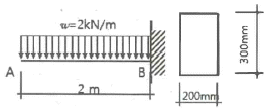
- 0.29mm
- 0.49mm
- 0.69mm
- 0.89mm
(정답률: 27%)
47. 강도설계법에 따른 하중조합으로 옳은 것은? (단, 건축구조기준 설계하중 적용)
- 1.2D
- 1.2D+1.0E+1.6L
- 0.9D+1.3 W
- 1.2D+1.3L+0.9W
(정답률: 46%)
48. 콘크리트충전강관(CFT)구조의 특징에 관한 설명으로 옳지 않은 것은?
- 철근콘크리트구조에 비해 내력과 변형능력이 뛰어나다.
- 콘크리트의 충전성 확인이 용이하다.
- 강구조에 비해 국부좌굴의 위험성이 낮다.
- 콘크리트 타설 시 별도의 거푸집이 필요 없다.
(정답률: 40%)
49. 그림과 같은 연속보의 판별은?
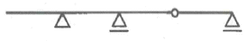
- 정정
- 1차 부정정
- 2차 부정정
- 3차 부정정
(정답률: 54%)
50. 기성 콘크리트 말뚝의 파일 이음법에 해당하지 않는 것은?
- 충전식 이음
- 파이프 이음
- 용접식 이음
- 볼트식 이음
(정답률: 46%)
51. 철근콘크리트 단근보를 설계할 때 최대철근비로 옳은 것은? (단, fy=400MPa, ρb=0.038)
- 0.0271
- 0.0304
- 0.0342
- 0.0361
(정답률: 42%)
52. 단면이 300mm×300mm인 단주에서 핵반경 값은?
- 30mm
- 40mm
- 50mm
- 60mm
(정답률: 49%)
53. 휨응력 산정 시 필요한 가정에 관한 설명 중 옳지 않은 것은?
- 보는 변형한 후에도 평면을 유지한다.
- 보의 휨응력은 중립축에서 최대이다
- 탄성범위 내에서 응력과 변형이 작용한다.
- 휨부재를 구성하는 재료의 인장과 압축에 대한 탄성계수는 같다.
(정답률: 37%)
54. 철근의 이음에 관한 기준으로 옳지 않은 것은?
- D32를 초과하는 철근은 겹침이음을 할 수 없다.
- 휨부재에서 서로 직접 접촉되지 않게 겹침이음된 철근은 횡방향으로 소요 겹침이음길이의 1/5 또는 150mm 중 작은 값 이상 떨어지지 않아야 한다.
- 용접이음은 용접용 철근을 사용해야 하며 철근의 설계기준항복강도 fy의 125% 이상을 발휘할 수 있는 완전용접이어야 한다.
- 다발철근의 겹침이음은 다발 내의 개개 철근에 대한 겹침이음길이를 기본으로 하여 결정하여야한다.
(정답률: 50%)
55. 부재길이가 3.5m이고, 지름이 16mm인 원형단면 강봉에 3kN의 축하중을 가하여 강봉이 재축방향으로 2.2mm 늘어났을 때 이 재료의 탄성계수 E는?
- 17763MPa
- 18965MPa
- 21762MPa
- 23738MPa
(정답률: 37%)
56. 그림과 같은 도형의 도심의 위치 Xo의 값으로 옳은 것은?
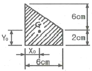
- 2.4cm
- 2.5cm
- 2.6cm
- 2.7cm
(정답률: 37%)
57. 스팬이 4.5m이고, 과도한 처짐에 의해 손상되기 쉬운 비구조요소를 지지하지 않은 평지붕구조에서 활하중에 의한 순간처짐의 한계는?
- 17mm
- 20mm
- 25 mm
- 34mm
(정답률: 49%)
58. 강도설계법에서 처짐을 계산하지 않는 경우 스팬ℓ=8m인 단순지지 콘크리트 보의 최소 두께는? (단, 보통중량콘크리트 사용, fy=400MPa)
- 400mm
- 450mm
- 500mm
- 550mm
(정답률: 41%)
59. 그림과 같은 트러스의 D부재의 응력은?
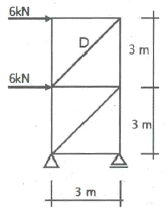
- 3kN
- 3√2kN
- 6kN
- 6√2kN
(정답률: 41%)
60. 그림과 같은 단순보의 C점에 생기는 휨 모멘트의 크기는?
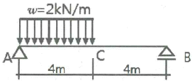
- 2kN·m
- 4kN·m
- 6kN·m
- 8kN·m
(정답률: 41%)
4과목: 건축설비
61. 변전실의 위치 선정 시 고려할 사항으로 옳지 않은 것은?
- 외부로부터 전원의 인입이 편리할 것
- 기기를 반입, 반출하는데 지장이 없을 것
- 지하 최저층으로 천장높이가 3m 이상일 것
- 부하의 중심에 가깝고 배전에 편리한 장소일 것
(정답률: 64%)
62. 조명 용어에 따른 단위가 옳지 않은 것은?
- 광속: 루멘[lm]
- 광도: 캔들[cd]
- 조도: 룩스[lx]
- 방사속: 스틸브[sb]
(정답률: 63%)
63. 다음과 같이 정의되는 전기설비 관련 용어는?
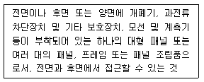
- 캐비닛
- 배전반
- 분전반
- 차단기
(정답률: 59%)
64. 배수수직관 내의 압력변화를 방지 또는 완화하기 위해, 배수수직관으로부터 분기·입상하여 통기수직관에 접속하는 통기관은?
- 습통기관
- 결합통기관
- 각개통기관
- 신정통기관
(정답률: 56%)
65. 처리대상 인원 1000인, 1인 1일당 오수량 0.1m3, 오수의 평균 BOD 200ppm, BOD 제거율 85%인 오수 처리시설에서 유출수의 BOD량은?
- 1.5kg/day
- 3kg/day
- 4.5kg/day
- 6kg/day
(정답률: 44%)
66. 실의 용도별 주된 환기목적으로 적절하지 않은 것은?
- 화장실 - 열, 습기 제거
- 옥내주차장 - 유독가스 제거
- 배전실 - 취기, 열, 습기 제거
- 보일러실 - 열 제거, 연소용 공기공급
(정답률: 60%)
67. LPG 용기의 보관온도는 최대 얼마 이하로 하여야하는가?
- 20℃
- 30℃
- 40℃
- 50℃
(정답률: 67%)
68. 습공기선도에 표현되어 있지 않은 것은?
- 비체적
- 노점온도
- 절대습도
- 엔트로피
(정답률: 50%)
69. 벨로즈(Bellows)형 방열기 트랩을 사용하는 이유는?
- 관내의 압력을 조절하기 위하여
- 관내의 증기를 배출하기 위하여
- 관내의 고형 이물질을 제거하기 위하여
- 방열기 내에 생긴 응축수를 환수시키기 위하여
(정답률: 51%)
70. 고가수조방식을 채택한 건물에서 최상층에 세정밸브가 설치되어 있을 때, 이 세정밸브로부터 고가수조저수면까지의 필요 최저 높이는? (단, 세정밸브의 최저 필요 압력은 70kPa이며, 고가수조에서 세정밸브까지의 총마찰손실수두는 4mAq이다.)
- 약 4.7m
- 약 7.4m
- 약 11m
- 약 74m
(정답률: 53%)
71. 덕트설비의 설계 및 시공에 관한 설명으로 옳지 않은 것은?
- 덕트계통에서 엘보 하류로부터 적정거리를 지난후 취출구를 설치한다.
- 아스펙트비(aspect rati이란 장방형덕트에서 장변길이와 단변길이의 비율을 의미한다.
- 송풍기와 덕트의 접속부는 캔버스이음을 설치하여 덕트계통으로의 진통 전달을 방지한다.
- 덕트의 단위길이당 압력손실이 일정한 것으로 가정하는 치수결정법을 정압재취득법이라 한다.
(정답률: 36%)
72. 다음의 건물 내 급수방식 중 수질오염의 가능성이 가장 큰 것은?
- 수도직결방식
- 고가수조방식
- 압력수조방식
- 펌프직송방식
(정답률: 66%)
73. 설계온도가 22℃인 실의 현열부하가 9.3kW일 때 송풍공기량은? (단, 취출공기온도 32℃, 공기의 밀도1.2kg/m3, 비 열 1.0⑤kJ/kg·K이다.)
- 2314m3/h
- 2776m3/h
- 2968m3/h
- 3299m3/h
(정답률: 42%)
74. 개별식 급탕방식에 관한 설명으로 옳지 않은 것은?
- 유지관리는 용이하나 배관 중의 열손실이 크다.
- 건물완공 후에도 급탕 개소의 증설이 비교적 쉽다
- 급탕개소가 적기 때문에 가열기, 배관 길이 등 설비 규모가 작다.
- 용도에 따라 필요한 개소에서 필요한 온도의 탕을 비교적 간단히 얻을 수 있다.
(정답률: 46%)
75. 자동화재탐지설비의 수신기의 종류에 속하지 않는 것은?
- P형 수신기
- R형 수신기
- M형 수신기
- B형 수신기
(정답률: 67%)
76. 배수관을 막히게 하는 유지분, 모발, 섬유 부스러기 및 인화 위험 물질 등을 물리적으로 수거하기 위하여 설치하는 것은?
- 팽창관
- 포집기
- 수처리기
- 체크밸브
(정답률: 68%)
77. 팬코일유닛(FCU) 방식에 관한 설명으로 옳지 않은 것은?
- 각 유닛의 개별제어가 가능하다.
- 각 실의 공기 정화 능력이 우수하다.
- 수배관으로 인한 누수의 우려가 있다.
- 덕트 샤프트나 스페이스가 필요 없거나 작아도 된다.
(정답률: 44%)
78. 다음은 옥내소화전방수구에 관한 설명이다. ( ) 안에 알맞은 것은?
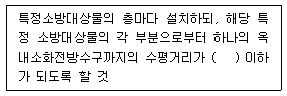
- 15m
- 20m
- 25m
- 30m
(정답률: 45%)
79. 난방설비에 관한 설명으로 옳은 것은?
- 복사난방은 패널의 복사열을 주로 이용하는 방식이다.
- 증기난방은 증기의 현열을 주로 이용하는 방식이다.
- 온풍난방은 온풍의 잠열을 주로 이용하는 방식이다.
- 온수난방은 온수의 잠열을 주로 이용하는 방식이다.
(정답률: 51%)
80. 관류형 보일러에 관한 설명으로 옳지 않은 것은?
- 기동시간이 짧다.
- 수처리가 필요없다.
- 수드럼과 증기드럼이 없다.
- 부하변동에 대한 추종성이 좋다.
(정답률: 42%)
5과목: 건축관계법규
81. 건축물의 피난·안전을 위하여 건축물 중간층에 설치하는 대피공간인 피난안전구역의 면적 산정식으로 옳은 것은?
- (피난안전구역 위층의 재실자 수×0.5)×0.12m2
- (피난안전구역 위층의 재실자 수×0.5)×0.28m2
- (피난안전구역 위층의 재실자 수×0.5)×0.33m2
- (피난안전구역 위층의 재실자 수×0.5)×0.45m2
(정답률: 50%)
82. 건축법령상 대지면적에 대한 건축면적의 비율로 정의되는 것은?
- 용적률
- 건폐율
- 수용률
- 대지율
(정답률: 73%)
83. 다음 중 건축물의 관람석 또는 집회실로부터 바깥쪽으로의 출구로 쓰이는 문을 안여닫이로 하여서는 안 되는 건축물은?
- 위락시설
- 판매시설
- 문화 및 집회시설 중 전시장
- 문화 및 집회시설 중 동·식물원
(정답률: 37%)
84. 건축법령상 다가구주택이 갖추어야 할 요건에 해당하지 않는 것은?
- 19세대 이하가 거주할 수 있을 것
- 독립된 주거의 형태를 갖추지 아니할 것
- 주택으로 쓰는 총수(지하층은 제외)가 3개 층 이하일 것
- 1개 동의 주택으로 쓰는 바닥면적(부설 주차장 면적은 제외)의 합계가 660m2 이하일 것
(정답률: 63%)
85. 건축물의 용도변경과 관련된 시설군 중 영업 시설군에 속하지 않는 건축물의 용도는?
- 판매시설
- 운동시설
- 업무시설
- 숙박시설
(정답률: 53%)
86. 다음 중 6층 이상의 거실면적의 합계가 6000m2인 건축물을 건축하고자 하는 경우 설치하여야 하는 승용승강기의 최소 대수가 가장 많은 건축물은? (단, 8인승 승용승강기를 설치하는 경우)
- 업무시설
- 위락시설
- 숙박시설
- 의료시설
(정답률: 64%)
87. 공작물을 축조할 때 특별자치시장·특별자치도지사 또는 시장·군수·구청장에게 신고를 하여야 하는 대상공작물에 속하지 않는 것은? (단, 건축물과 분리하여 축조하는 경우)
- 높이가 3m인 담장
- 높이가 3m인 옹벽
- 높이가 5m인 굴뚝
- 높이가 5m인 광고탑
(정답률: 58%)
88. 가구·세대 등 간 소음 방지를 위하여 건축물의 층간바닥(화장실 바닥은 제외)을 국토교통부령으로 정하는 기준에 따라 설치하여야 하는 대상 건축물에 속하지 않는 것은?
- 단독주택 중 다중주택
- 업무시설 중 오피스텔
- 숙박시설 중 다중생활시설
- 제2종 근린생활시설 중 다중생활시설
(정답률: 42%)
89. 주택관리지원센터의 수행 업무에 속하지 않는 것은?
- 간단한 보수 및 수리 지원
- 건축물의 유지·관리에 대한 법률 상담
- 건축물의 개량·보수에 관한 교육 및 홍보
- 건축신고를 하고 건축 중에 있는 건축물의 위법 시공 여부의 확인·지도 및 단속
(정답률: 61%)
90. 노외주차장의 주차형식에 따른 차로의 최소 너비가 옳지 않은 것은? (단, 이륜자동차전용 외의 노외주차장으로서 출입구가 2개 이상인 경우)
- 평행주차 : 3.5m
- 교차주차 : 3.5m
- 직각주차 : 6.0m
- 60도 대향주차 : 4.5m
(정답률: 43%)
91. 다음 중 대수선에 속하지 않는 것은?
- 특별피난계단을 수선 또는 변경하는 것
- 방화구획을 위한 벽을 수선 또는 변경하는 것
- 다세대주택의 세대 간 경계벽을 수선 또는 변경하는 것
- 기존 건축물이 있는 대지에서 건축물의 층수를 늘리는 것
(정답률: 65%)
92. 주차장에서 장애인전용 주차단위구획의 면적은 최소 얼마 이상이어야 하는가? (단, 평행주차형식 외의 경우)
- 11.5m2
- 12m2
- 15m2
- 16.5m2
(정답률: 56%)
93. 급수·배수(配水)·배수(排水)·환기·난방 설비를 건축물에 설치하는 경우 관계전문 기술자(건축기계설비기술사 또는 공조냉동기계기술사)의 협력을 받아야 하는 대상건축물에 속하지 않는 것은? (단, 해당 용도에 사용되는 바닥면적의 합계가 2000m2인 건축물의 경 우)
- 판매시설
- 연립주택
- 숙박시설
- 유스호스텔
(정답률: 39%)
94. 주차장법령상 다음과 같이 정의되는 주차장의 종류는?
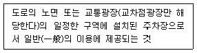
- 노상주차장
- 노외주차장
- 공용주차장
- 부설주차장
(정답률: 72%)
95. 시설물의 부지 인근에 단독 또는 공동으로 부설주차장을 설치할 수 있는 부설주차장의 규모 기준은?
- 주차대수 300대 이하
- 주차대수 400대 이하
- 주차대수 500대 이하
- 주차대수 600대 이하
(정답률: 62%)
96. 상업지역의 세분에 속하지 않는 것은?
- 근린상업지역
- 전용상업지역
- 유통상업지역
- 중심상업지역
(정답률: 53%)
97. 다음은 건축물의 공사감리에 관한 기준 내용이다. 밑줄 친 공사의 공정이 대통령령으로 정하는 진도에 다다른 경우에 해당하지 않는 것은? (단, 건축물의 구조가 철근콘크리트조인 경우)
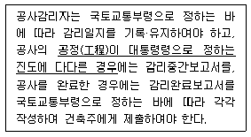
- 지붕슬래브배근을 완료한 경우
- 기초공사 시 철근배치를 완료한 경우
- 높이 20m마다 주요구조부의 조립을 완료한 경우
- 지상 5개 층마다 상부 슬래브배근을 완료한 경우
(정답률: 49%)
98. 국토의 계획 및 이용에 관한 법령에 따른 기반 시설 중 공간시설에 속하지 않는 것은?
- 광장
- 유원지
- 유수지
- 공공공지
(정답률: 58%)
99. 국토교통부령으로 정하는 기준에 따라 채광 및 환기를 위한 창문 등이나 설비를 설치하여야 하는 대상에 속하지 않는 것은?
- 의료시설의 병실
- 숙박시설의 객실
- 업무시설의 사무실
- 교육연구시설 중 학교의 교실
(정답률: 57%)
100. 건축허가신청에 필요한 기본설계도서 중 배치도에 표시하여야 할 사항에 속하지 않는 것은?
- 주차장 규모
- 공개공지 및 조경계획
- 대지에 접한 도로의 길이 및 너비
- 건축선 및 대지경계선으로부터 건축까지의 거리
(정답률: 45%)